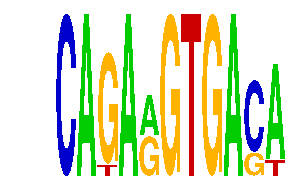

family_9 |
|---|
|  |
| Download PWM |
| Download instances (motifs) |
| Show motif distribution |
Query_ID | Query_Consensus | Subject_Name | Source_DB | Subject_ID | Length | Orientation | Offset | Divergence | Overlap | Subject_Consensus |
|---|---|---|---|---|---|---|---|---|---|---|
| family_9 | CAGARGTGACA | MAFK | HOCOMOCO | MAFK_HUMAN.H10MO.S | 10 | reverse-complement | 6 | 0.817 | 5 | TGCTGAGTCA |
Sequence | Start_position (from start) | Start_position (from end) | Average conservation | Best conservation score | Instance_with_best_CS | Best_Z-score | Instance_with_best_ZS | Strand |
|---|---|---|---|---|---|---|---|---|
| chr8:64252000-64253540 | 667 | 678 | 0.590818 | 0.88 | CAGARGTGACW | 12.722097 | CAGARGTGASA | 1 |
| chr13:12411200-12421100 | 7879 | 7890 | 0.00127273 | 0.003 | CAGARGTGASA | 12.722097 | CAGARGTGASA | -1 |
| chr17:12997400-12998517 | 442 | 453 | 0.00845455 | 0.02 | CAGARGTGASA | 14.438022 | CAGARGTGACW | 1 |
| chr1:94344401-94345900 | 1283 | 1294 | 0.0186364 | 0.03 | CAKARGTGACA | 12.722097 | CAGARGTGASA | 1 |
| chr8:110521900-110523600 | 1017 | 1028 | 0.00809091 | 0.015 | CAGARGTGACW | 14.438022 | CAGARGTGACW | -1 |
| chr8:13242700-13244900 | 251 | 262 | 0.0350909 | 0.044 | CAKARGTGACA | 12.745775 | CAKARGTGACA | 1 |
| chr8:64373826-64374826 | 72 | 83 | 0.515636 | 0.552 | CAGARGTGASA | 12.722097 | CAGARGTGASA | -1 |
| chr4:57767100-57768553 | 1315 | 1326 | 0.0105455 | 0.02 | CAKARGTGACA | 12.722097 | CAGARGTGASA | 1 |
| chr17:27009000-27012400 | 609 | 620 | 0.003 | 0.007 | CAGARGTGACW | 14.438022 | CAGARGTGACW | 1 |
| chr8:64159100-64162100 | 358 | 369 | 0.999273 | 1 | CAKARGTGACA | 12.745775 | CAKARGTGACA | 1 |
| chr12:104600200-104602100 | 178 | 189 | 0.00345455 | 0.008 | CAGARGTGASA | 14.438022 | CAGARGTGACW | 1 |
| chr2:166340000-166341500 | 407 | 418 | 0.794727 | 0.91 | CAGARGTGASA | 14.438022 | CAGARGTGACW | 1 |
| chr8:34973703-34974703 | 261 | 272 | 0.944545 | 0.97 | CAGARGTGASA | 12.722097 | CAGARGTGASA | 1 |
| chr13:45824900-45826600 | 598 | 609 | 0.000545455 | 0.004 | CAGARGTGASA | 12.745775 | CAKARGTGACA | -1 |
| chr11:54861300-54862395 | 939 | 950 | 0.131545 | 0.149 | CAGARGTGACW | 14.438022 | CAGARGTGACW | 1 |
| chr2:90969400-90973057 | 1207 | 1218 | 0.00281818 | 0.009 | CAGARGTGASA | 12.745775 | CAKARGTGACA | -1 |
| chr3:54239700-54241300 | 1372 | 1383 | 0.00390909 | 0.013 | CAGARGTGASA | 12.722097 | CAGARGTGASA | 1 |
| chr14:21486600-21488800 | 1539 | 1550 | NA | NA | CAGARGTGASA | 14.438022 | CAGARGTGACW | 1 |
| chr12:76821476-76822476 | 429 | 440 | 0.00554545 | 0.007 | CAGARGTGACW | 12.722097 | CAGARGTGASA | 1 |
| chr12:74966100-74967339 | 163 | 174 | 0.0645455 | 0.138 | CAGARGTGASA | 12.722097 | CAGARGTGASA | 1 |